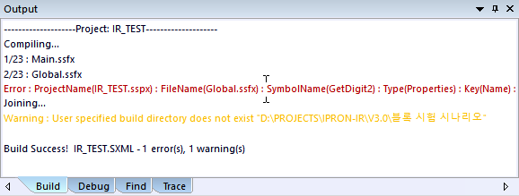
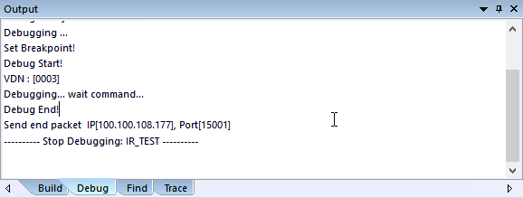
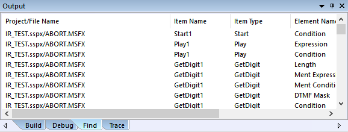
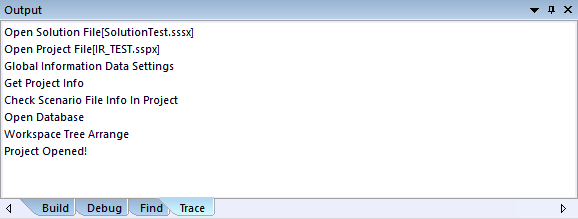

| Output Window | 시작 다음 이전 |
Build, Debug, Find, Trace 가 출력 되는 창입니다.

· 시나리오 빌드 시에 빌드 정보를 출력 합니다. · Error 부분을 더블클릭 하면 해당 시나리오 파일의 아이템으로 이동 합니다.

· 디버깅 시에 디버깅 처리 정보를 표시 합니다.

· 검색 시에 검색된 리스트를 출력 합니다. · 검색 리스트에서 더블클릭 하면 해당 시나리오의 아이템으로 이동 합니다.
Trace Tab

· ForCusStudio 중요 처리의 로그를 출력 합니다.
|
| Copyrights(C) Bridgetec.co.kr. All Rights Reserved | 시작 다음 이전 |